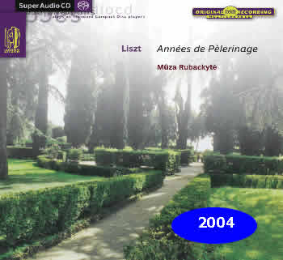

|


Années de
Pèlerinage (intégrale) Mûza Rubackyte (piano)
Les Années de Pèlerinage font très rarement l'objet d'un enregistrement intégral. Hasard de l'actualité, deux enregistrements se succèdent à quelques semaines d'intervalle. Après Nicholas Angelich dont la conception, d'une grande beauté pianistique, m'a toutefois laissé sur ma faim en raison d'un excès de placidité, Mûza Rubackyte frappe un grand coup. C'est là une version à marquer d'une pierre blanche! N'insistons pas sur la technique exceptionnelle de l'artiste et saluons plutôt l'intelligence avec laquelle elle restitue les atmosphères très diverses qui composent ce corpus majeur du piano romantique. Le romantisme justement: il vibre avec le souffle, les couleurs que réclame un Liszt émerveillé par la beauté du monde dans une 3re Année où Rubackyte se garde de tout excès de pathos mais trouve toujours le geste adéquat. Avec raison, elle préfère souligner la modernité d'écriture d'une musique prophétique à plus d'un titre. Que seraient Debussy et Ravel sans ce que Liszt a inventé ici? On se régale tout autant des miroitements de lumière de "Venezia e Napoli", au terme d'une 2e Année où la pianiste explore avec fièvre et un sens visionnaire "Après une lecture du Dante". Rubackyte tient de bout en bout cette pièce redoutable et en saisit toute la complexité. À quelle magie, quel envoûtement sonores nous convie-t-elle enfin dans les pages plus tardives de la 3e Année... Du grand art!
PIANISTE Juillet-Août 2004 Alain Cochard
Les Années de Pèlerinage font très rarement l'objet d'un enregistrement intégral. Hasard de l'actualité, deux enregistrements se succèdent à quelques semaines d'intervalle. Après Nicholas Angelich dont la conception, d'une grande beauté pianistique, m'a toutefois laissé sur ma faim en raison d'un excès de placidité, Mûza Rubackyte frappe un grand coup. C'est là une version à marquer d'une pierre blanche! N'insistons pas sur la technique exceptionnelle de l'artiste et saluons plutôt l'intelligence avec laquelle elle restitue les atmosphères très diverses qui composent ce corpus majeur du piano romantique. Le romantisme justement: il vibre avec le souffle, les couleurs que réclame un Liszt émerveillé par la beauté du monde dans une 3re Année où Rubackyte se garde de tout excès de pathos mais trouve toujours le geste adéquat. Avec raison, elle préfère souligner la modernité d'écriture d'une musique prophétique à plus d'un titre. Que seraient Debussy et Ravel sans ce que Liszt a inventé ici? On se régale tout autant des miroitements de lumière de "Venezia e Napoli", au terme d'une 2e Année où la pianiste explore avec fièvre et un sens visionnaire "Après une lecture du Dante". Rubackyte tient de bout en bout cette pièce redoutable et en saisit toute la complexité. À quelle magie, quel envoûtement sonores nous convie-t-elle enfin dans les pages plus tardives de la 3e Année... Du grand art!
PIANISTE Juillet-Août 2004 Alain Cochard